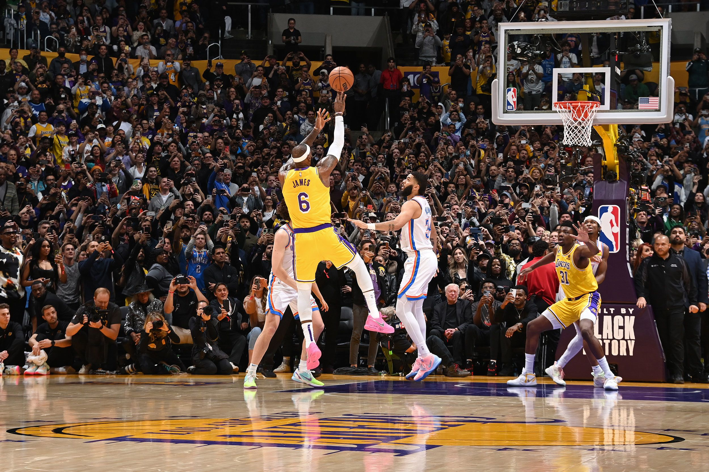

Os Los Angeles Lakers são uma das franquias mais icônicas da National Basketball Association (NBA) e têm uma história rica e emocionante no mundo do basquete. A história da equipe remonta a 1946, quando foram fundados como Minneapolis Lakers, na cidade de Minneapolis, Minnesota. Durante os primeiros anos, os Lakers foram uma força dominante na liga, conquistando cinco campeonatos da NBA entre 1949 e 1954.
Os Los Angeles Lakers são uma das franquias mais icônicas da National Basketball Association (NBA) e têm uma história rica e emocionante no mundo do basquete. A história da equipe remonta a 1946, quando foram fundados como Minneapolis Lakers, na cidade de Minneapolis, Minnesota. Durante os primeiros anos, os Lakers foram uma força dominante na liga, conquistando cinco campeonatos da NBA entre 1949 e 1954.
No entanto, a história dos Lakers se transformou quando a equipe se mudou para Los Angeles em 1960. Com a mudança para a cidade das estrelas, a franquia começou a desenvolver uma identidade que refletia o glamour e o prestígio de Hollywood. Os anos 1960 foram marcados pela presença de estrelas como Jerry West e Elgin Baylor, mas foi com a chegada de Wilt Chamberlain em 1968 que os Lakers finalmente conquistaram seu primeiro título em Los Angeles.
Os anos 1980 foram a era de ouro dos Lakers. Com Magic Johnson, Kareem Abdul-Jabbar e um elenco talentoso, a equipe venceu cinco campeonatos durante a década, estabelecendo-se como uma das equipes mais dominantes da história da NBA. Eles também protagonizaram uma das maiores rivalidades da liga com o Boston Celtics.
Na década de 2000, os Lakers continuaram a brilhar sob a liderança de Kobe Bryant e Shaquille O'Neal, conquistando três campeonatos consecutivos de 2000 a 2002. Kobe Bryant se tornaria uma das maiores lendas da NBA e deixaria sua marca inconfundível na história dos Lakers.
Mais recentemente, a equipe adicionou LeBron James e Anthony Davis ao elenco, conquistando o título da NBA em 2020. A franquia Lakers mantém sua reputação como uma das mais prestigiosas e seguidas na NBA, com uma legião de fãs apaixonados e uma história repleta de conquistas, grandes jogadores e momentos memoráveis no basquete profissional.
